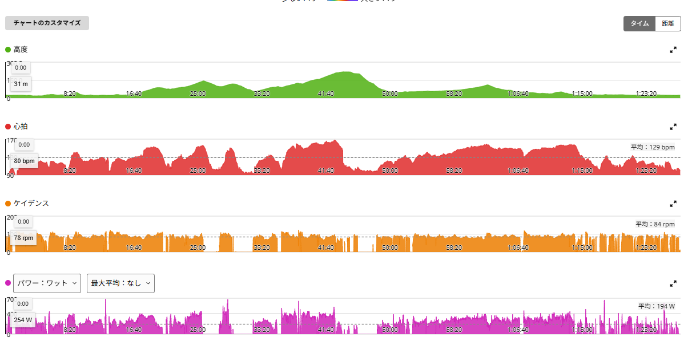
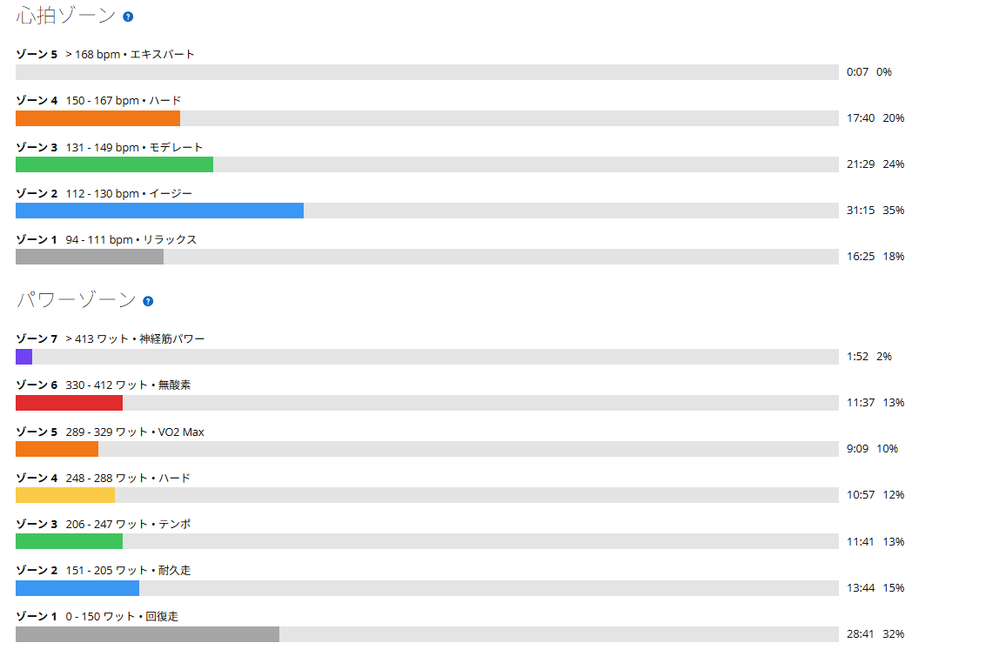
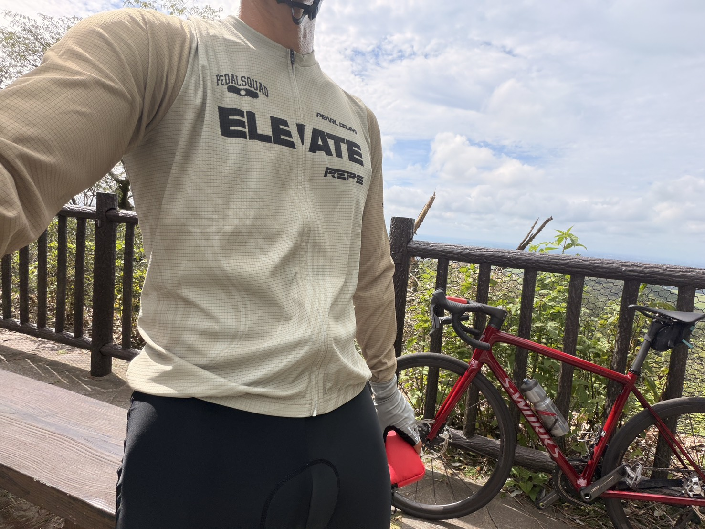

太平でついに7分切り。6分58秒・330Wでも、きつさは別物にならなかった
今日は太平方面へ。琴平は路面がかなり荒れているのが容易に予想できたので、今日はそこには入らず、安全に走れる範囲でしっかり踏む日にした。
お盆を過ぎたからなのか、空は少し秋っぽい。真夏のギラギラした感じとは違って、雲の見え方も柔らかい。気温はまだ夏だが、空だけ見ると少し季節が進んだ感じがする。そして今日は新しい練習ウェアも投入。そんなことを考えながら走ってきた。

40.82km・NP254W・TSS124.3
- 全体40.82km / 1時間27分47秒 / 獲得480m / 運動負荷131
- 負荷平均194W / NP254W / IF0.924 / TSS124.3 / 最大688W / 20分最大267W
- 心拍・回転平均129bpm / 最大168bpm / 平均84rpm
- 環境平均28.6℃ / 最高30.0℃ / 推定発汗1,327ml
- 効果有酸素TE3.4 / 無酸素TE0.1
1時間半弱でTSS124.3、IF0.924。高強度の日として十分な内容だった。昨日はMTBで3時間、ゾーン4以上ゼロという完全な低強度日だったので、そこから一気に振り切った形になる。

路面が悪い林道でも351W
- 序盤の林道2分10秒 / 351W / 心拍141〜155bpm / 83rpm
序盤の林道は路面があまり良くなかった。それでも351W出ている。レスト明けということもあって、走り出しは少しかかりが悪い感覚があった。ただ、これは疲労で身体が動かない感じとは違う。少し鈍さはあるのに、踏み始めればちゃんと力が出る。そういう種類の重さだった。
路面が悪い中でこのパワーが出ていたので、身体の状態自体は悪くなかったのだと思う。
太平は6分58秒・330W。ついに7分切り
- 太平6分58秒 / 平均330W / NP338W / 心拍153〜168bpm / 88rpm
- 前回（8月10日）7分06秒 / 319W
今日のメインは太平。結果は6分58秒、平均330W。ついに7分を切った。75kg基準なら約4.40W/kgである。前回のウエット路面の日が7分06秒・319Wだったので、8秒短縮して11W増。最近の太平は7分台前半が続いていたので、タイムもパワーも一段上がったことになる。
正直、今日はかなりきつく感じた。ただ最大心拍が168bpmまで上がっていたなら、それも納得である。
面白かったのは、「パワーが高くなったから、以前より特別にきつい」という感じではなかったこと。高い出力が出ても、苦しさそのものが急に別物になるわけではない。最近は高い出力を出すこと自体に、身体が少しずつ慣れてきているのかもしれない。そのうえで今日は、心拍がしっかり上まで使われた日だった。
信号待ちを挟んでも280W台へ戻せた
- 太平のあと9分26秒 / 284W
- 信号待ちのあと6分41秒 / 286W
太平のあとも、後半でしっかり踏んだ。途中で信号に捕まっているので、これをひと続きの16分走として見るつもりはない。それでも太平を330Wで登ったあとに、信号待ちを挟んで再び280W台へ戻せたのは良かった。
最近ずっと狙っているのは「1本だけ高く出す」ではなく「後半でも踏み直せる」の方である。その部分が、少しずつ形になってきている。
ゾーン4以上で33分35秒
- パワーゾーンZ7 1分52秒 / Z6 11分37秒 / Z5 9分09秒 / Z4 10分57秒 / Z3 11分41秒
- 心拍ゾーンZ5 7秒 / Z4 17分40秒 / Z3 21分29秒 / Z2 31分15秒 / Z1 16分25秒

ゾーン4以上で合計33分35秒。かなり長い時間、高い出力側に入っている。心肺側も心拍ゾーン4が17分40秒あるので、今日はしっかり使った日だった。太平で特にきつく感じたのも、この数字なら納得できる。
新しい練習ウェアと、少し秋になった空
今日は新しい練習ウェアを初投入した。ベーシックフィットなので、レース用のジャージのように身体へぴったり張り付く感じではない。実際に着ると、肩や胸まわりにも少し余裕がある。

買ったあとで「レースフィットでもよかったかな」とは思った。でも実際に走ってみると、練習用としてはかなり楽である。締め付けが少なく、長時間でも気になりにくい。普段のトレーニングなら「空力より着ていて楽」も十分に大事だと思う。本気でタイムを狙う日やレースならレースフィット、普段の練習や長めの実走なら今回みたいなベーシックフィット。そんな使い分けでいい。
ちなみに、買ったあとに見たらセールで69%オフになっていた。さすがに笑った。
そして空である。写真を見ると夏の空ではあるのだが、少しだけ秋っぽい。雲が高く見えて、空の表情も変わってきた。気温はまだ28〜30℃で普通に暑いのに、お盆を過ぎると季節が進んだ感じがする。こういう変化を感じながら走れるのも、外ライドのいいところだと思う。
今日やってみて思ったこと
太平で6分58秒・330W、ついに7分切り。路面の悪い林道でも351W。後半も284Wと286W。かなりしっかり踏めた1日だった。
特に面白かったのは、パワーが上がっても苦しさが急に別物にならなかったことだ。今日はかなりきつかったが、最大心拍168bpmまで上がっているなら納得できる。身体はしっかりしていて、高い出力にも少しずつ慣れてきている感じがする。
新しいウェアも初投入。レースフィットでもよかったかと思いつつ、楽に着られるのでこれはこれで正解だった。そして空は少し秋っぽい。真夏の高強度練習から、少しずつ次の季節へ。まだ暑いけれど、走っているとそんな変化も感じるようになってきた。
次に見るポイント
- 太平の再現性330W前後をもう一度出せるか。7分切りが一度きりで終わらないか
- 後半の踏み直しメインのあとでも280W台へ戻せるか
- レスト明け今日感じた「かかりの悪さ」が今後も出るか
- フォーム高い出力を出しても崩れないか
- ウェアと路面新しいウェアが長時間でも快適か。琴平の路面が来週どこまで戻るか